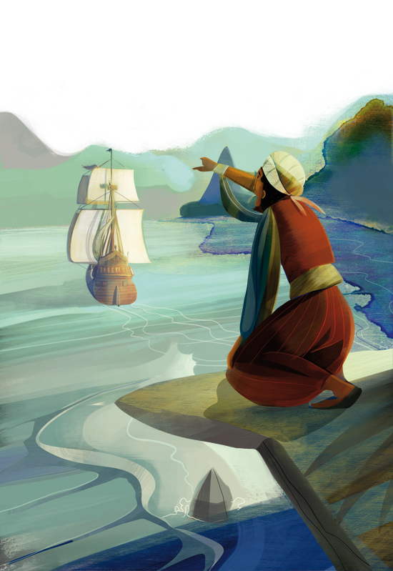

A Ilha do Tesouro: Perguntas e Respostas
Nesse site, vamos descobrir se você conhece bastante sobre a obra
A Ilha do Tesouro
, de Robert Louis Stevenson.
Além disso, vamos ver se você consegue se lembrar de algumas diferenças entre as adaptações da obra. Está Preparado?

1-Qual é o Nome do Protagonista da Obra?
2-Qual é o Nome da Hospedaria em que a família do Protagonista trabalha?
3-Qual é o Nome do Pirata que Visita a Hospedaria?
Velho Pew
Cão Negro
Billy Bones
Long John Silver
4-Cite os Nomes dos Personagens que ajudam na busca da Ilha do Tesouro (Dica: São Dois)
5-Qual o nome do Pirata que foi o "criador" da Ilha do Tesouro"?
6-Cite no mínimo 5 diferenças entre a Ilha do Tesouro e o filme Planeta do Tesouro da Disney.
Digite Aqui
7-Em que ano foi lançado a Ilha do Tesouro?
1818
1883
1851
1899
Enviar Respostas